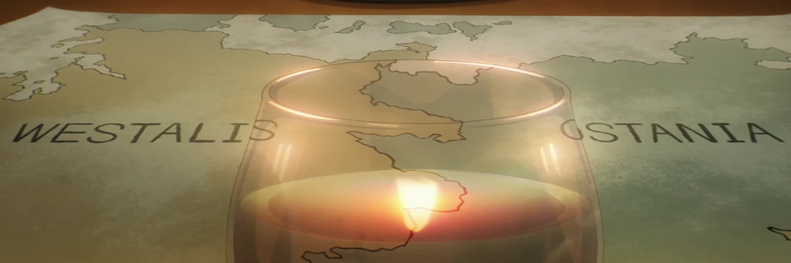
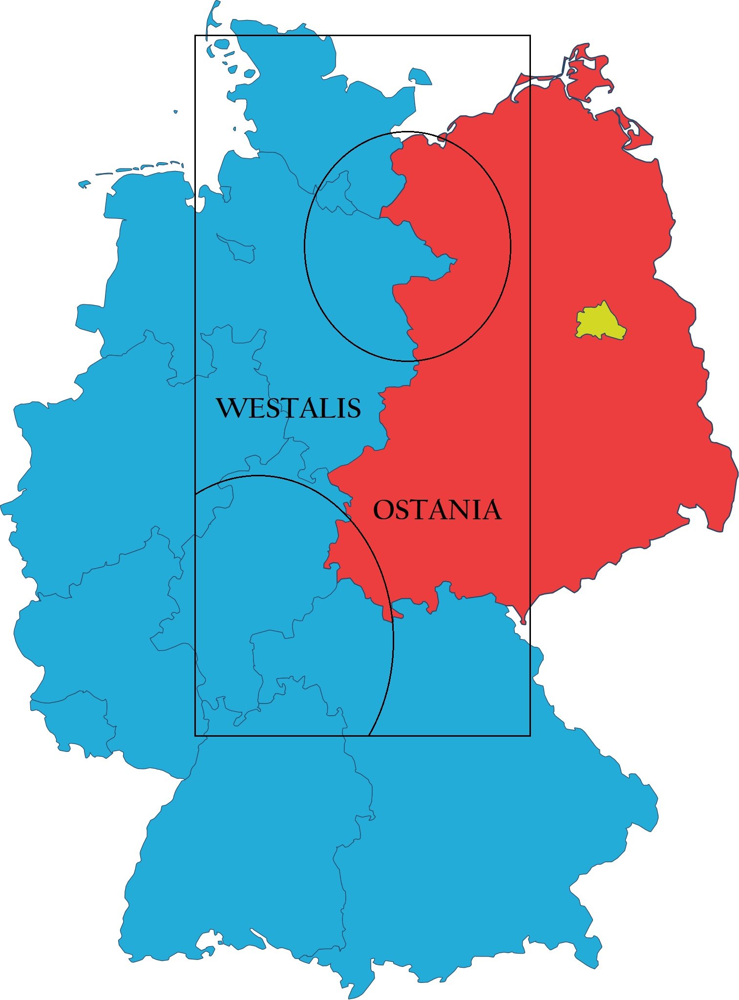
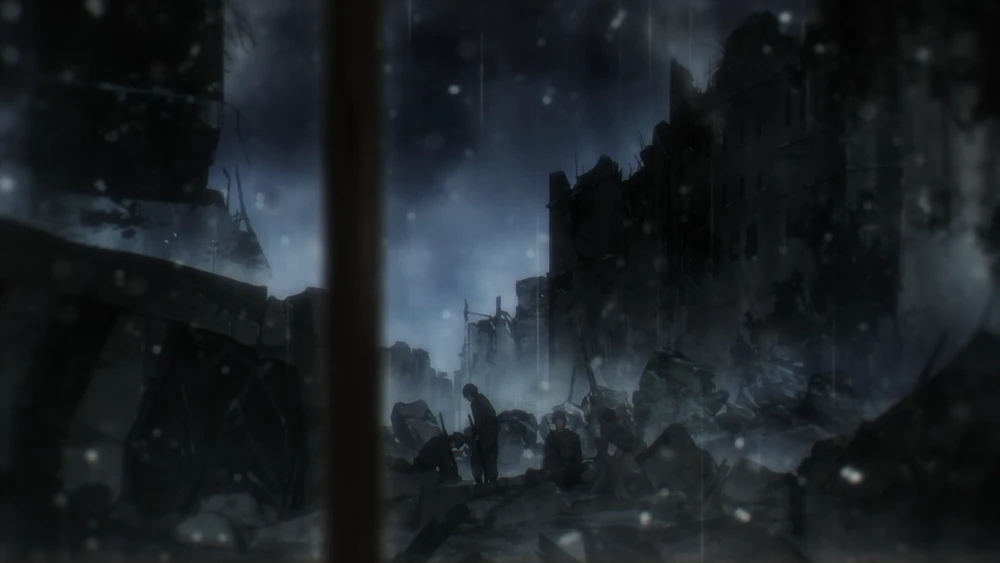

Durante siglos, la orgullosa nación de Ostania ha defendido su identidad y soberanía ante las constantes tensiones con su país vecino, Westalis. A lo largo de la historia, diferencias culturales y políticas han marcado el destino de ambas naciones, llevándolas a enfrentamientos que definieron el rumbo de la región.
En un momento crucial para nuestra nación, Ostania se vio envuelta en la Primera Guerra Este-Oeste con el firme objetivo de garantizar la unidad y estabilidad de la región. En respuesta a este desafío, el pueblo ostaniano demostró su inquebrantable patriotismo, contribuyendo al esfuerzo nacional con valentía y determinación. Instituciones de prestigio como la Academia Edén jugaron un papel fundamental en la formación del carácter cívico y el deber patriótico de la juventud, inculcando los valores de disciplina y compromiso con la nación. La comunicación estratégica del Estado garantizó que cada ciudadano comprendiera la importancia de la causa nacional, promoviendo la unidad en tiempos de incertidumbre.


Si bien el conflicto armado ha cesado, la realidad geopolítica sigue siendo compleja. En la actualidad, Ostania continúa protegiendo su estabilidad y bienestar ante amenazas externas, manteniéndose alerta en un mundo en constante cambio. El Estado trabaja incansablemente para garantizar la seguridad y prosperidad de la nación, adoptando medidas estratégicas para enfrentar cualquier intento de desestabilización. En esta nueva era, el deber de cada ciudadano es velar por la integridad de Ostania, apoyando a sus instituciones y defendiendo con orgullo el honor de nuestra patria.